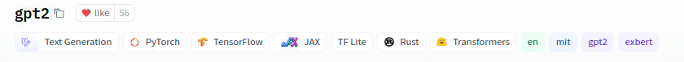
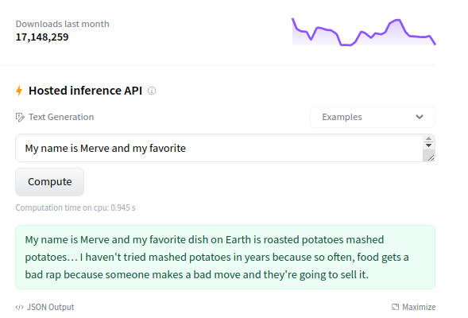
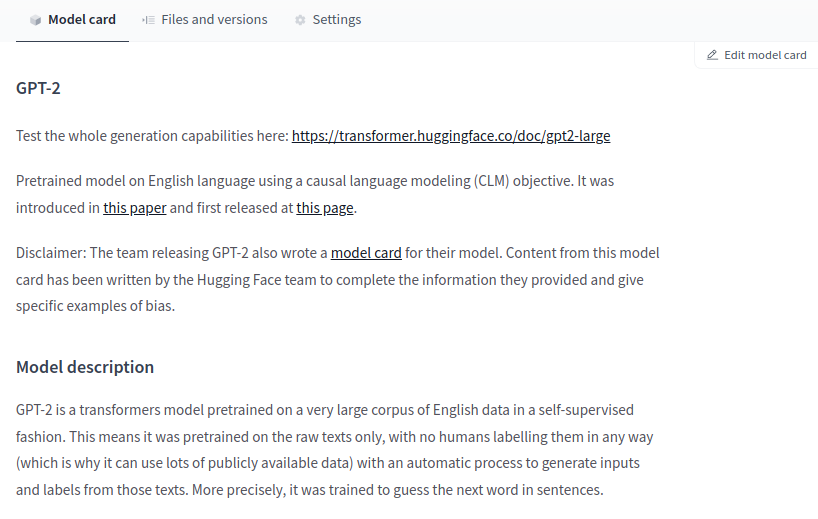
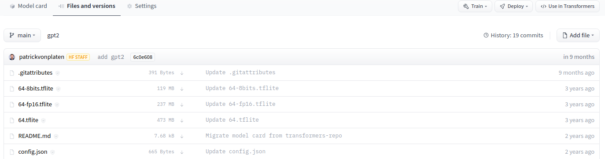
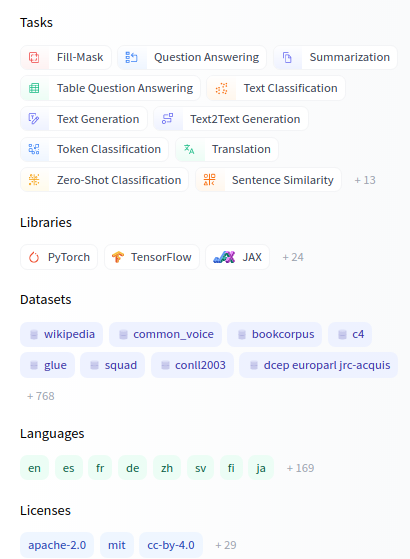
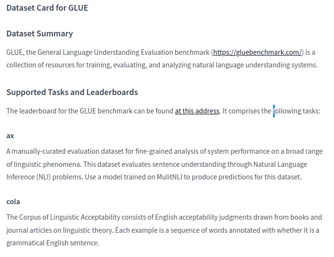
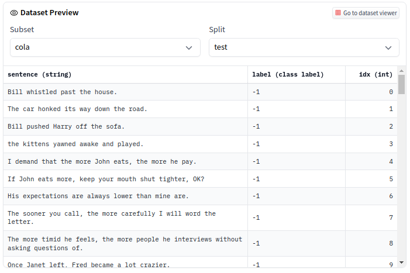
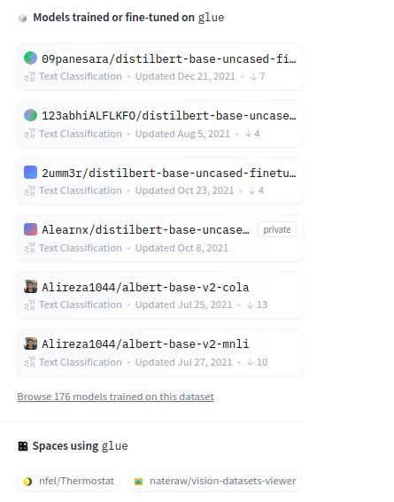
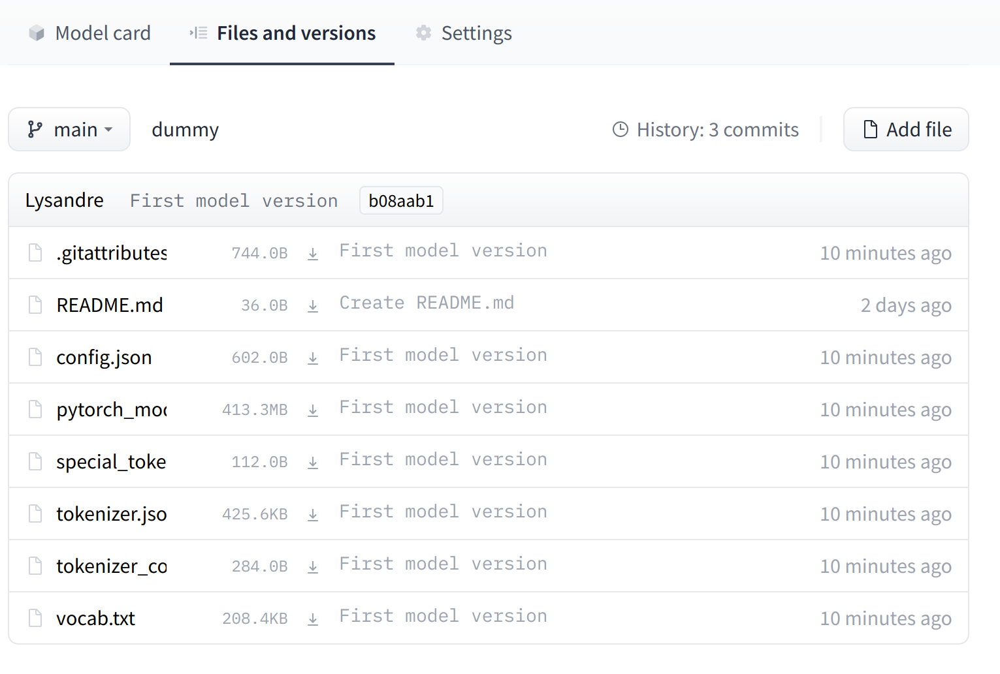

Hugging Face Hub 🤗
Introduction
Introduction
Hugging FAce is a data science and community platform that provides tools to easily build, train and deploy ML models
What is the Hub?
- The Hub is a free platform where anyone can share and explore models, datasets, and ML demos.
Tip
- Over 300,000 public models.
- Models for Natural Language Processing, Computer Vision, Audio/Speech, and Reinforcement Learning
- Models for over 180 languages.
Learning Goals
Tip
- Explore models shared on the Hub.
- Find suitable models and datasets for your task.
- How to contribute and work collaboratively.
- Explore ML demos created by the community.
Models
Exploring a model
You can access over 300,000 models at hf.co/models.
You will see gpt2 as one of the models with the most downloads. Let’s click on it.
The website will take you to the model card when you click a model.
What is the Model Card?
- A model card is a tool that
- documents models,
- provides helpful information about the models
- is essential for discoverability and reproducibility
Tags
- At the top, you can find different tags for things such as the
- task (text generation, image classification, etc.)
- frameworks (PyTorch, TensorFlow, etc.),
- the model’s language (English, Arabic, etc.),
- and license (e.g. MIT).
Inference API
At the right column, you can play with the model directly in the browser using the Inference API.
GPT2 is a text generation model, so it will generate additional text given an initial input.
Try typing something like, “It was a bright and sunny day.”
Model Card Content
In the middle, you can go through the model card content.
It has sections such as Intended uses & limitations, Training procedure, and Citation Info.
Where does the data come from?
At Hugging Face, everything is based in Git repositories and is open-sourced.
You can click the “Files and Versions” tab, which will allow you to see all the repository files, including the model weights.
The model card is a markdown file (README.md) which on top of the content contains metadata such as the tags.
Just as with GitHub, you can do things such as Git cloning, adding, committing, branching, and pushing.
Take a look at config.json
Open the
config.jsonfile of the GPT2 repository.The config file contains hyperparameters as well as useful information for loading the model.
Exploring Models
Filter
At the left of https://huggingface.co/models, you can filter for different things:
Tasks: Computer Vision, Natural Language Processing, Audio, and more.
Libraries: You can find models of Keras, PyTorch, spaCy, allenNLP, and more.
Datasets: The Hub also hosts thousands of datasets, as you’ll find more about later.
Languages: Many of the models on the Hub are NLP-related. You can find models for hundreds of languages.
Adding a model
Learn how to upload a model to the Hub.
Workflow
Go to huggingface.co/new to create a new model repository.
You start with a public repo that has a model card.
You can upload your model either by using the Web UI or by doing it with Git.
- Wub UI: You can click Add File and drag and drop the files you want to add.
Note
Take a look at the appendix to learn how to use Git
Share and collaboarate
Now that the model is in the Hub, others can find them!
You can also collaborate with others easily by creating an organization.
Hosting through the Hub allows a team to update repositories and do things you might be used to, such as working in branches and working collaboratively.
The Hub also enables versioning in your models: if a model checkpoint is suddenly broken, you can always head back to a previous version.
Datasets
Basics
The Hub hosts around 3000 datasets that are open-sourced and free to use in multiple domains.
On top of it, the open-source
datasetslibrary allows the easy use of these datasetsSimilar to models, you can head to https://hf.co/datasets. At the left, you can find different filters based on the task, license, and size of the dataset.
GLUE datset
Let’s explore the GLUE dataset, which is a famous dataset used to test the performance of NLP models.
Similar to model repositories, you have a dataset card that documents the dataset. If you scroll down a bit, you will find things such as the summary, the structure, and more.
Dataset slice
At the top, you can explore a slice of the dataset directly in the browser.
The GLUE dataset is divided into multiple sub-datasets (or subsets) that you can select, such as COLA and QNLI.
Models trained on the dataset
- At the right of the dataset card, you can see a list of models trained on this dataset.
ML Demos
How to create an interactive, publicly available demo
Basics
- Demos of models are an increasingly important part of the ecosystem.
Demos allow:
- model developers to easily present their work to a wide audience
- to increase reproducibility in machine learning by lowering the barrier to test a model
- to share with a non-technical audience the impact of a model
Frameworks
Acknowledgments
The slides are mainly based on a toolkit provided by HuggingFace
What’s next?
Congratulations! You have completed this tutorial 👍
Next, you may want to go back to the lab’s website
Appendix: Git approach
Git approach
If you want to understand the complete workflow how to upload models, let’s go with the Git approach.
Install both git and git-lfs on your system. 1. Git: https://git-scm.com/book/en/v2/Getting-Started-Installing-Git 2. Git-lfs: https://git-lfs.github.com/. Large files need to be uploaded with Git LFS. Git does not work well once your files are above a few megabytes, which is frequent in ML. ML models can be up to gigabytes or terabytes!
Clone the repository you just created
```python git clone https://huggingface.co/<your-username>/<your-model-id> ```Go to the directory and initialize Git LFS
Git approach (optional)
HuggingFace already provides a list of common file extensions for the large files in .gitattributes
If the files you want to upload are not included in the .gitattributes file, you might need as shown here: You can do so with
Git approach
- Add your files to the repository. The files depend on the framework/libraries you’re using. Overall, what is important is that you provide all artifacts required to load the model. For example: 1. For TensorFlow, you might want to upload a SavedModel or
h5file. 2. For PyTorch, usually, it’s apytorch_model.bin. 3. For Scikit-Learn, it’s usually ajoblibfile.
Here is an example in Python saving a Scikit-Learn model file.
Git approach
- Commit and push your files. (make sure the saved file is within the repository). Use GitHub Desktop or:
And we’re done! You can check your repository with all the recently added files!
. . . 
The UI allows you to explore the model files and commits and to see the diff introduced by each commit.
Jan Kirenz